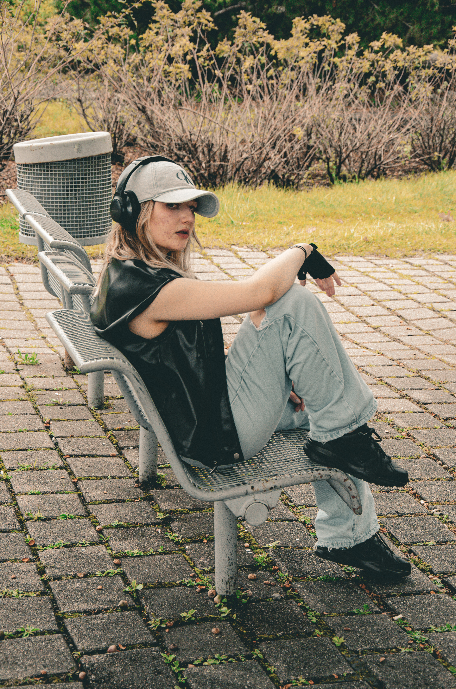
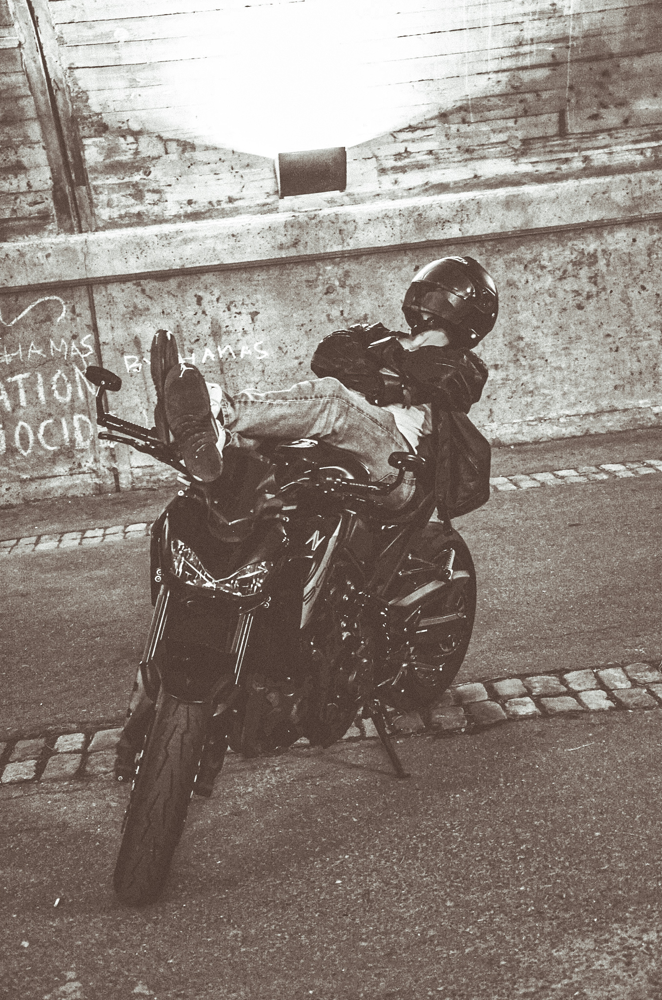
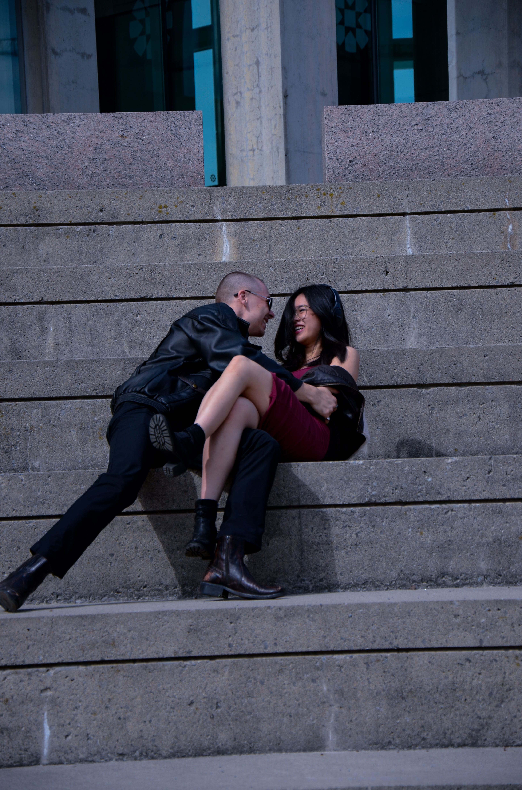
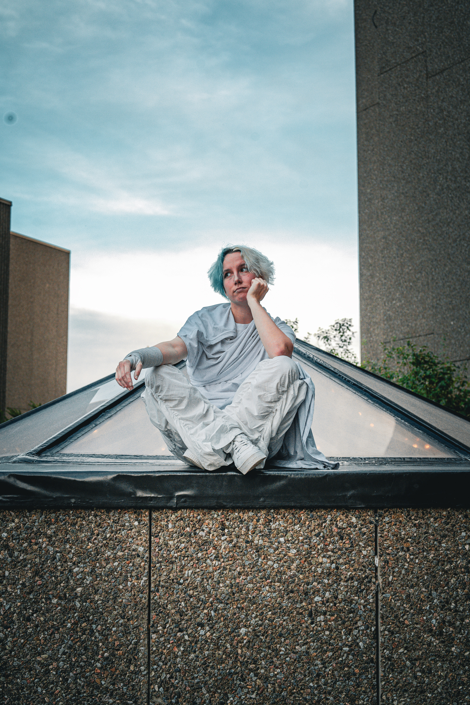

My name is Mootaz Matraji, also known as Lumin-X Photos,
I am a photographer based out of Ottawa. I started my photography
journey almost 2 years ago now with my dads old camera
to start with. I love to do portraits, automotive work, sports and much more.
Client 1

Working with Lumin-X is such a positive experience!
His behind-the-scenes shots are amazing, and I absolutely
loved the photos —they were incredible! He is very easy going
and great at working seamlessly around the videographer without
distracting us. His photos always turn out fantastic!
Biker

The shoot I had with Lumin-X was great because
I felt in control and he was helping me follow
the mission and vision I had for the photos.
I would recommend Lumin-X to other people
especially someone for for an artistic look.
The positivity during the whole shoot was great.
Mina

10/10 experience! I don’t find myself photogenic
but Lumin-X has a way of capturing pictures in the
moment so there was not much pressure on me and
my boyfriend and kept open communication with us
the entire time to make sure we both got what we
wanted out of the photoshoot. I loved the final
photos so much, I couldn’t believe what he was
able to capture.
Client 4

It's always super pleasant to work with Lumin-X.
He always makes an effort to learn everyones names
and make mental notes of poses and formations.
I’d definitely recommend him to anyone looking
for a photographer! His ability to capture great
shots while we’re dancing is something dancers
truly value. Unlike past event photos where
quality was lacking or people were cut
off/making weird faces, his work stands
out with diverse angles and beautifully
edited photos.
Pricing
The price varies depending on the scope of the projects
deliverables and overall time it'll take to complete said photos.
Also wether you want extra services add ontop. Please feel free to reach out and get an estimate from me.